AI Academy · Level 1 · Grade 6 · Week 10 · Student lesson
If/Then Decisions
Learn to understand, design, build, test and explain AI systems responsibly.
Project: Helpful Classroom Sorter
Before you start
Week 9: trace every instruction from a stated starting condition.
Plan time to read, investigate and explain. Keep predictions separate from observations.
Student lesson · 1 of 17
Your mission
Your learning target
I can evaluate a condition using the current state and trace only the selected branch.
I can distinguish inclusive and strict boundaries using values below, at and above a threshold.
I can design a boundary test and handle an unknown input without silently treating it as false.
Remember before reading
Close your notes first. A rough first answer helps us choose the right starting point; it is not a score for your ability.
Without opening the old lesson, explain one key idea from Algorithms as Recipes. Give an example and a mistake that the idea helps you avoid.
Without opening the old lesson, explain one key idea from Categories and Labels. Give an example and a mistake that the idea helps you avoid.
Without opening the old lesson, explain one key idea from Rules or Learned Patterns?. Give an example and a mistake that the idea helps you avoid.
After trying, check the relevant lesson or ask your teacher. Change the part of your explanation that the evidence shows was wrong.
Conditions make an algorithm branch when information changes.
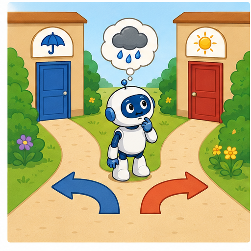
Learner name:
Readiness for the connected explanation
Score starts at 4. Add 2 to score, then double it. Which value is doubled, and what is the final score?
This week’s end goal
By the end, I can trace exactly one branch and test an including equality boundary.
Student lesson · 2 of 17
Notice the evidence
PICTURE STORY
Look Closely Before You Explain
Pictures give clues; evidence tells us what the clues mean.

What do you notice?
Name three visible details without explaining them yet.
Circle the detail most connected to the system's decision.
Name one detail that may be decoration or distraction.
Make a first prediction and state the clue that supports it.
My observations, prediction, and evidence:
A closer explanation
A paper game updates a score with this procedure: add 2 to score; if score is at least 6, subtract 3 from score; otherwise add 4 to score; report score and stop. The if and otherwise instructions form one if/else decision. Exactly one of those branches runs each time this decision is reached.
A condition asks whether a statement is true for the current state. At least 6 means 6 or any larger number. If score is 6, the condition is true. If score is 5, it is false. The condition itself does not change score; the chosen branch performs the update.
Start score at 4. First add 2, giving 6. Now test the current 6: the condition is true, so subtract 3 and report 3. Testing the original 4 would choose the wrong branch. Write the state immediately before the condition so the evidence for the choice is visible.
Student lesson · 3 of 17
See how it works
VISUAL MECHANISM
Input → Process → Output
Follow the information instead of imagining magic inside the machine.
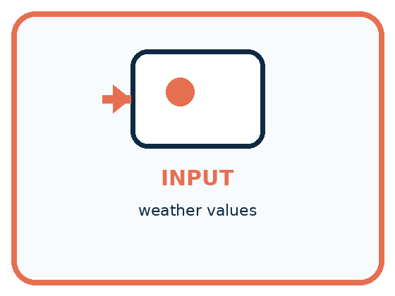
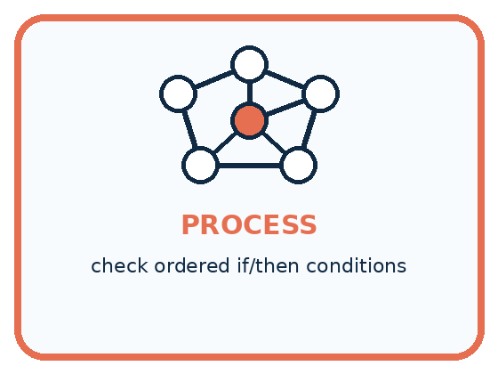
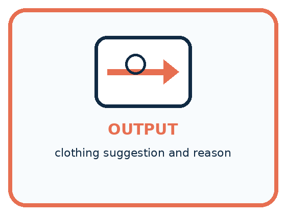
INPUT weather values
PROCESS check ordered if/then conditions
OUTPUT clothing suggestion and reason
Draw a fresh example with all three stages:
A closer explanation
Compare the three values immediately around the threshold. These are the values when the condition is reached, after the initial add-2 instruction. Testing only a value far above 6 would not show whether equality was handled correctly.
Three checks around the threshold
Above 6 is different: it means strictly greater than 6, so 6 itself does not pass. At most 6 means 6 or smaller. Below 6 means strictly smaller, so it excludes 6. Say the equality case aloud before using one of these phrases.
A condition can be true even when its chosen action makes the number smaller. True describes the test result; it does not mean good, bigger, or a successful game. The written instructions define the action.
Connect the picture and the explanation
Point to the input, the deciding step and the result in this week’s visual. Explain the same step in ordinary words. A picture helps when you can say what each part represents.
Student lesson · 4 of 17
Compare the cases
PICTURE GALLERY
Four Cases, Four Clues
Use the visual cue, then read the evidence carefully.
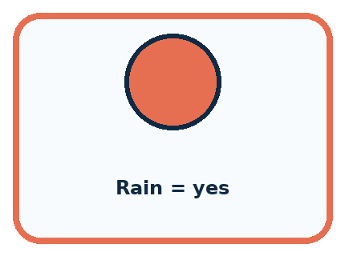
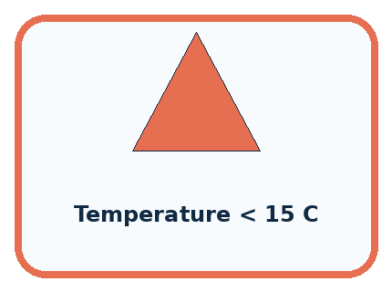
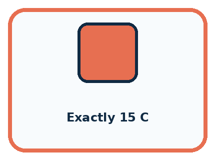
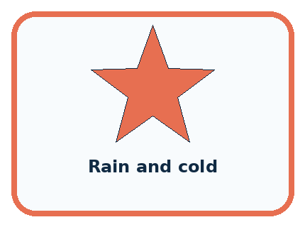
CASE 1 — Rain = yes Clue: then choose raincoat. Meaning: clear binary branch.
CASE 2 — Temperature < 15 C Clue: then choose warm layer. Meaning: numeric threshold.
CASE 3 — Exactly 15 C Clue: needs boundary rule. Meaning: edge case.
CASE 4 — Rain and cold Clue: two conditions overlap. Meaning: order or combined rule needed.
Which two pictures are easiest to confuse? What evidence separates them?
Change one thing in the pictured case
Change: Replace at least 6 with above 6.
Prediction: Only the run starting at 4 changes: it reports 12.
Reason: Updated value 6 fails a strict above comparison and is doubled.
Student lesson · 5 of 17
Words that unlock the idea
VOCABULARY
Words You Can See and Use
The badge is a memory cue; the definition does the real thinking work.
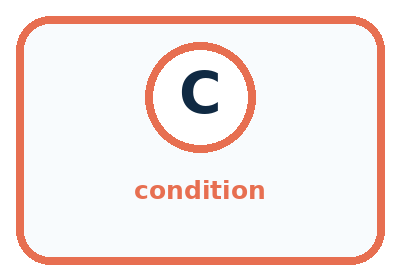
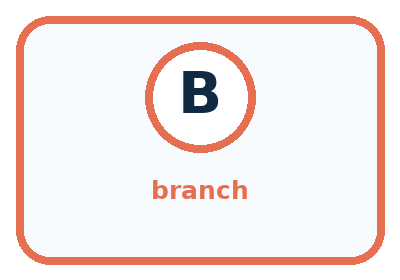
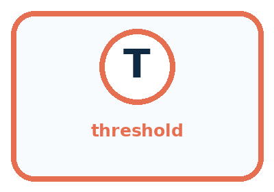
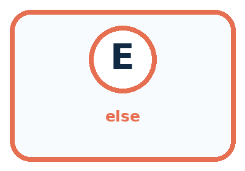
| Word | Meaning | My example |
|---|---|---|
| condition | question evaluated as true or false | |
| branch | path selected by a condition | |
| threshold | value where a decision changes | |
| else | path used when earlier conditions are false |
Misconception detective
CLAIM TO REPAIR If one example works, the branch is complete.
Use one vocabulary word and one piece of evidence to repair it:
Words used in the closer explanation
| Word | Meaning |
|---|---|
| Inclusive boundary | A boundary whose equality case is included |
| Boundary test | A test using a value at or close to a point where behaviour can change |
Student lesson · 6 of 17
Follow a worked example
WORKED EXAMPLE
Watch the Reasoning, Not Just the Answer
Every step connects a claim to observable evidence.

STEP 1 — OBSERVE weather values
STEP 2 — TRACE check ordered if/then conditions
STEP 3 — CONCLUDE clothing suggestion and reason
What new evidence could change this answer?
A closer explanation
| Initial score | State and condition after adding 2 | Branch and final score |
|---|---|---|
| 3 | 5 is not at least 6 | Add 4 and report 9 |
| 4 | 6 is at least 6 | Subtract 3 and report 3 |
| 5 | 7 is at least 6 | Subtract 3 and report 4 |
In the first run, the false branch increases 5 to 9. That does not make the earlier decision run again. The procedure has already chosen and carried out the otherwise branch, so it moves on to report and stop. Subtracting 3 afterward would incorrectly run both branches and report 6.
This rule applies to one if/else decision. A later, separate condition would be a new test of the state at that later point. Do not invent an extra test or loop because the value crossed the threshold. Follow only the instructions in the procedure.
Learn from the worked case
Cover the result before checking it. Say what is given, choose the procedure, and follow one step at a time. Then uncover the result and explain your first mismatch. Ask why a step is allowed, not only what number it produces.
A pictorial worked case: If/Then Decisions
A fictional counter begins with a number, adds 2, then chooses one branch.
The facts we will use
If the updated value is at least 6, subtract 1; otherwise double it.
Report once and stop. Use separate starting values 3,4,5.


Read the picture one step at a time
Why this result follows
The condition is evaluated after adding 2. Equality belongs to the at-least branch, so starting at 4 checks the boundary. Once a branch finishes, the program reports; it does not reconsider the condition just because doubling 5 produced 10.
What this example does not establish
A large reported value need not mean the true branch ran; branch choice depends on the earlier value.
Read the labelled picture: Which input detects the difference between the two written conditions? Explain its entire run.
Change one thing: Replace at least 6 with above 6. Predict the result before checking the explanation. What remains the same?
Student lesson · 7 of 17
Find and repair a mistake
COMPARE
Same Result, Different Reason
A comparison helps reveal the true concept boundary.
| Case | Evidence | What it shows |
|---|---|---|
| Rain = yes | then choose raincoat | clear binary branch |
| Temperature < 15 C | then choose warm layer | numeric threshold |
| Exactly 15 C | needs boundary rule | edge case |
| Rain and cold | two conditions overlap | order or combined rule needed |
Repair two tempting claims
CLAIM A If one example works, the branch is complete.
Repair:
CLAIM B Changing branch order cannot change the result.
Repair:
A closer explanation
Our examples so far use known whole-number scores. If score is unreadable when the test is reached, we cannot establish whether it is at least 6. Unknown does not mean false, and a blank is not automatically zero. For this paper exercise, pause the procedure and request the missing value before selecting a branch.
A complete procedure must specify what to do when required input is unavailable. Another system might define a separate fallback, but it must be written explicitly. Testing below, at and above the boundary checks comparison behaviour; it does not replace a missing-input policy or prove every possible implementation correct.
Student lesson · 8 of 17
Practise together
GUIDED PRACTICE
Try It, Check It, Explain It
Use support now so you can succeed independently later.

Explain how the picture story demonstrates this idea: Conditions make an algorithm branch when information changes.
Use a fresh example to explain condition.
Trace a new input → process → output example.
Find and repair the error in: Changing branch order cannot change the result.
Invent one edge case and name the safe response.
A closer explanation
Suppose a copied procedure says above 6 instead of at least 6. A score of 5 at the condition takes the false branch under both versions. A score of 7 takes the true branch under both. But exactly 6 separates them: the intended version subtracts 3 and gives 3; the copied version adds 4 and gives 10.
Record the initial value, the value at the condition, the true or false result, and the chosen update. A final number alone may not reveal whether the test or the arithmetic was wrong. Keep the expected behaviour tied to the stated policy instead of changing it to match a result.
Practise with less help: Read four boundary phrases
Use workbook W2 for the connected example “Conditions and boundary cases”. First fill the input and rule boxes. Try the middle steps before asking for a hint. After a hint, try the next step yourself.
| Plan | Do | Check |
|---|---|---|
| What is given? Which rule or procedure applies? | Record each intermediate step. | Does the result follow? What remains unknown? |
Explain your trace to a partner. Your partner points to one step to check. Swap roles on the next case. Each person writes their own explanation.
Check your reasoning
Use the worked case for Conditions and boundary cases. Proposed explanation: “The condition reads the starting value”. Decide whether this explanation is supported. Point to the step or supplied fact that decides; explain your repair if needed.
Answer on your own before discussion. If you are unsure, say which step you need help with.
Explain the picture
Which input detects the difference between the two written conditions? Explain its entire run.
This is supported practice. Keep the separately named independent case for an attempt before feedback.
Student lesson · 9 of 17
Run the investigation
EXPLORER LAB
Weather Wardrobe Branches
Predict first, test honestly, and explain what the evidence means.

State your prediction before the result is known.
Complete the task: Build a weather-clothing rule and test four cases.
Keep a normal case and an edge case clearly separated.
Record what happened—even when it does not match your prediction.
Explain the result, one limitation, and the next useful test.
| Case | Prediction | Observed result | What it means |
|---|---|---|---|
| Normal | |||
| Edge |
Plan → try → check
Before trying: what do I expect, and why? While trying: which step could first go wrong? Afterwards: what did I actually observe, and what should change? Keep “not run” if you only traced the procedure.
Student lesson · 10 of 17
Build your understanding
PRACTICE LADDER
Climb from Recall to Defense
Each step asks for a stronger kind of understanding.

RECALL Define condition.
EXPLAIN Conditions make an algorithm branch when information changes.
TRACE Show the input, process, and output.
DIAGNOSE Repair: If one example works, the branch is complete.
TRANSFER Apply the idea to a new home or classroom case.
CREATE Design one revealing test.
DEFEND Give a claim, evidence, mechanism, limit, and safe action.
Student lesson · 11 of 17
Connect your project
PROJECT
Helpful Classroom Sorter
Build one coherent system across the year, one evidence-based decision at a time.

What real classroom need does this serve?
What information is necessary—and what should stay private?
What happens inside the process?
What normal and edge cases will you test?
When should it say not sure or ask a person?

My project decision:
Evidence for your project
Include equality examples when reviewing sorter conditions, and trace from original input through output.
Student lesson · 12 of 17
Show what you know
MASTERY
Fresh-Case Independent Proof
Complete this after teaching and guided practice have ended.

□ Name or draw the fresh case.
□ Trace input, process, and output.
□ State the conclusion and strongest evidence.
□ Name one limit, failure, missing clue, or fairness/privacy concern.
□ Explain one safe next action or improvement.
Independent evidence:
My level: □ Not yet □ With one hint □ Independently □ I can teach it
Student lesson · 13 of 17
Study a complete case
Week 10 Worked case
Use the supplied details to practise the weekly concept before attempting the independent question. This case extends the illustrated lesson.
The situation
If a card has a star, send it to A; otherwise send it to B.
The question
Sort a star, a circle, and a card with both shapes.
Worked explanation
Star and mixed cards go to A because both have a star. The circle goes to B. The test is has a star, not has only a star.
Explain it in your own words
Which detail supports the answer, and why does it matter?
Trace the supplied case visually
Does this card have a star?
| Evidence or stage | Value or result |
|---|---|
| Star only | Yes → tray A |
| Circle only | No → tray B |
| Star and circle | Yes → tray A |
If a card has a star, send it to A; otherwise send it to B.
Sort a star, a circle, and a card with both shapes.
Star and mixed cards go to A because both have a star. The circle goes to B. The test is has a star, not has only a star.
Student lesson · 14 of 17
Try a new case independently
Independent case: Transfer the method to a new display
A paper brightness display adds 3 to its starting number. If the current brightness is at most 7, subtract 2; otherwise add 1. Report and stop. Trace separate runs from starting values 3, 4 and 5. Identify the run that tests equality. Then show how its result changes if at most 7 is accidentally written as below 7.
Attempt this case before feedback. Record any help. Earlier examples below are further practice; a case already practised with feedback cannot establish fresh transfer.
Week 10 Independent application
Close the worked explanation. Apply the idea to this different question without copying.
Use this exact rule: if a card has more than three dots, place it in tray A; otherwise use tray B. Trace cards with 2, 3 and 4 dots.
My answer, with a trace, calculation or supporting evidence
Create and test
Change one relevant detail. Predict the result before testing. Include a boundary or missing-information case when it helps reveal a limit.
My changed input and expected result
Connect to your project
Add one transparent if/then branch and one else path to the Classroom Sorter.
The evidence I will keep
Your teacher has the independent answer and scoring criteria. Complete the matching workbook week to keep your practice evidence together.
Transfer practice from the original programme
A club admits a visitor if they have a ticket AND an accompanying adult. Test all four yes/no combinations. A student changes AND to OR. Which outcomes change?
Use feedback to improve
Attempt the independent case before hints. Record whether you worked alone, used a hint or followed a model. After feedback, fix the first unsupported step and explain why it changed. A later check uses a changed case, not a copied answer.
Student lesson · 15 of 17
Your lesson route
Start with this question: A fictional counter begins with a number, adds 2, then chooses one branch.
| By the end, I can | How I will show it |
|---|---|
| Evaluate a condition using the current state and trace only the selected branch | Explain the deciding step, show a trace or test, and state one limit. |
| Distinguish inclusive and strict boundaries using values below, at and above a threshold | Explain the deciding step, show a trace or test, and state one limit. |
| Design a boundary test and handle an unknown input without silently treating it as false | Explain the deciding step, show a trace or test, and state one limit. |
Remember → watch and explain → try with help → investigate → try independently → keep project evidence. Your teacher may spread this lesson across several classes.
Keep your first prediction. Compare it with what the evidence shows and explain any change.
Student lesson · 16 of 17
Finish and return
Close your notes. Explain this goal in your own words: Evaluate a condition using the current state and trace only the selected branch
If you are unsure, return to the worked picture and explain one arrow. If you are ready, change an input or assumption and justify your prediction.
Save your workbook evidence. At the next review, try a different case before opening your old answer.
Student lesson · 17 of 17
Supported practice, repair and portfolio
Use this supported practice once, in the browser or on paper. Keep the reserved independent assessment for a separate first attempt before teacher feedback.
A fictional counter begins with a number, adds 2, then chooses one branch.
Practice 1: explain the deciding evidence
Which labelled step matches this detail? The three independent runs report 10,5,6.
1. Update first
2. Report
3. Choose one branch
4. Test current value
Hint if needed: Read the steps in the pictorial case. Match the supplied detail to the stage that performs or records it.
After your attempt, compare with the supported explanation: Report The three independent runs report 10,5,6. The condition is evaluated after adding 2. Equality belongs to the at-least branch, so starting at 4 checks the boundary. Once a branch finishes, the program reports; it does not reconsider the condition just because doubling 5 produced 10.
Practice 2: explain the deciding evidence
Changed-case practice: Replace at least 6 with above 6. Which conclusion is supported by the supplied facts?
1. This one example guarantees correct results for every future input.
2. Only the run starting at 4 changes: it reports 12.
3. We can decide the result without examining the changed input or the procedure.
Hint if needed: Use the changed condition and the deciding step in the pictorial trace. The answer must say what follows from those facts.
After your attempt, compare with the supported explanation: Only the run starting at 4 changes: it reports 12. Updated value 6 fails a strict above comparison and is doubled.
Repair a missing building block
Review Algorithms as Recipes (ai-1/9). Goal: Trace an ordered algorithm using the current value after every instruction. Short practice: Use the arrows to explain where the two zero-start runs first differ.. Return to this week and explain what you changed.
Review Categories and Labels (ai-1/7). Goal: Apply a category definition using explicit evidence and boundary rules. Short practice: Explain why B originally was revise rather than review, then label its changed version.. Return to this week and explain what you changed.
Review Rules or Learned Patterns? (ai-1/4). Goal: Execute a stated rule including its boundary. Short practice: Show which stage used labels and which stage used only the new measurement.. Return to this week and explain what you changed.
Keep your completed work
Use Download completed work in the hosted lesson to export your answers, reflections, practice feedback and code-run evidence. Open the HTML copy to read or print it. Drafts stay in this browser when storage is available; clear drafts on a shared device.